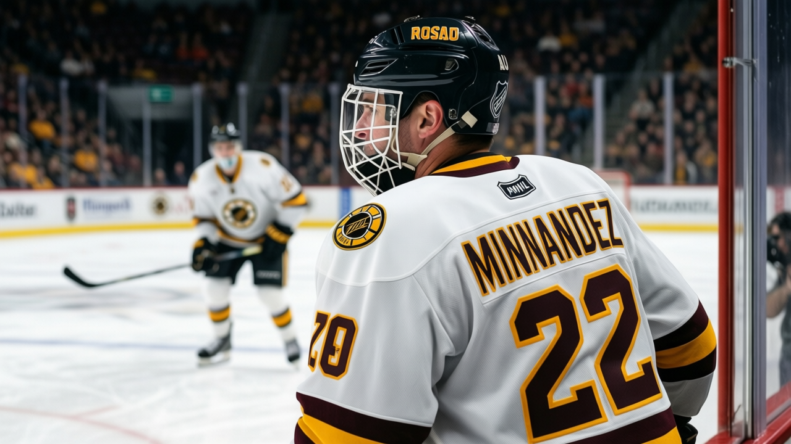

THE $31.09 MILLION SAVINGS ACCOUNT WEARS A HOCKEY SWEATER
The league's cheapest payroll, its two unhappiest goaltenders, and a profit that out-earns the roster.
 Mickey "The Mick" DonnellyColumnist, ex-goalie · The Penalty Box
Mickey "The Mick" DonnellyColumnist, ex-goalie · The Penalty Box
 Manny Fernandez85 has played 57.0 minutes a night for 27 games, and the Bureau has him at 70 on the morale scale, the floor of the league. His backup,
Manny Fernandez85 has played 57.0 minutes a night for 27 games, and the Bureau has him at 70 on the morale scale, the floor of the league. His backup,  Dwayne Roloson84, sits at 70 too. The two men who stop pucks for the league's cheapest payroll are its two most miserable employees, and the reason is on the ledger, not in the crease.
Dwayne Roloson84, sits at 70 too. The two men who stop pucks for the league's cheapest payroll are its two most miserable employees, and the reason is on the ledger, not in the crease.
 Minnesota Wild is 8-18-1, 21 points, tied for second-fewest in hockey. The payroll is $29.97M, the lowest in the league. The profit is $31.09M. That is the only club in the league that takes home more than it spends on the roster, and it is not close to being a coincidence.
Minnesota Wild is 8-18-1, 21 points, tied for second-fewest in hockey. The payroll is $29.97M, the lowest in the league. The profit is $31.09M. That is the only club in the league that takes home more than it spends on the roster, and it is not close to being a coincidence.
COL pays $71.56M and keeps $21.90M. NJ keeps $31.69M and spends $44.98M. Everywhere else the money goes out to the ice. In Minnesota the money comes back to the house, and the man with the pen banks more than the whole team makes. You do not get two goaltenders at 70 by bad luck. You get it by signing the checks small and letting December run long.
The men in the crease
Fernandez is not a backup and he is not a prospect. He is 81 in the Book, he plays 57.0 minutes a night, and he makes $1.50M. Roloson is 80 in the Book, seven games, $0.60M. The Bureau's club average for Minnesota is 86.2, second from the bottom in all 30 clubs, ahead of only Atlanta.
That is what a quiet room looks like from the Index: a goalie who stops the shots, counts the wins, and waits for the season to end. There is no quote on the record because there is no on-ice record worth quoting. The standings do the talking.
The defense up front is just as telling. The lineup card runs  Willie Mitchell70 and
Willie Mitchell70 and  James Patrick70, both 64 in the Book, ahead of a 60. The club built the cheapest blueline it could find and called it a defense. The revenue is $49.19M on a ticket of $80. The house is full enough and the seats cost enough that the accounting works, and the accounting is the only thing in Minnesota that does work.
James Patrick70, both 64 in the Book, ahead of a 60. The club built the cheapest blueline it could find and called it a defense. The revenue is $49.19M on a ticket of $80. The house is full enough and the seats cost enough that the accounting works, and the accounting is the only thing in Minnesota that does work.
The account statement
Nobody in the front office takes the blame because nobody in the front office answers to the standings. The coach answers. The goalies answer, 57.0 minutes a night with a straight face and a 70 on the morale sheet. The owner answers to nobody this side of April.
The cheapest payroll in hockey is a masterpiece of bookkeeping and a disaster of morale. The Index says 86.2 and the ledger says $31.09M and the standings say 8-18-1. The money is in the bank and the hockey is on the ice, and the whole story is the gap between them.